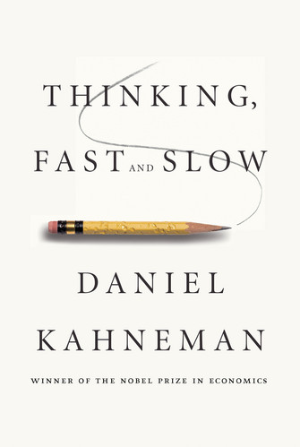

In the highly anticipated Thinking, Fast and Slow, Kahneman takes us on a groundbreaking tour of the mind and explains the two systems that drive the way we think. System 1 is fast, intuitive, and emotional; System 2 is slower, more deliberative, and more logical. Kahneman exposes the extraordinary capabilities—and also the faults and biases—of fast thinking, and reveals the pervasive influence of intuitive impressions on our thoughts and behavior. The impact of loss aversion and overconfidence on corporate strategies, the difficulties of predicting what will make us happy in the future, the challenges of properly framing risks at work and at home, the profound effect of cognitive biases on everything from playing the stock market to planning the next vacation—each of these can be understood only by knowing how the two systems work together to shape our judgments and decisions.
Engaging the reader in a lively conversation about how we think, Kahneman reveals where we can and cannot trust our intuitions and how we can tap into the benefits of slow thinking. He offers practical and enlightening insights into how choices are made in both our business and our personal lives—and how we can use different techniques to guard against the mental glitches that often get us into trouble. Thinking, Fast and Slow will transform the way you think about thinking.
The book is a lengthy, self-conscious and a challenging read but highly recommended if you're interested in why human beings behave the way they behave. It's given me so much 'oh snap, so that's why we're so dumb' moments that at this point I don't even want to admit I'm a human to any space-time traveling race that comes in collision of 21st century Earth. Citing behavioral research studies, he's convinced me that human confidence is a measure of whether a person has built up a coherent story not that the person truly knows what she's doing. He's convinced me that the feeling of 'ease' is just cognitive familiarity. He's convinced me why first impressions matter more than we think due to the Halo effect. He's convinced me that the human mind doesn't understand non-events. We think we understand the past, but we really don't. We create coherency by attributing causality to events, but not to non-events. In other words we underestimate the role of luck or the role of unknown variables in a given situation. He has given me reason to believe that in low validity environments, it's better to use formula's than to listen to expert human judgment. For example, the stability of a marriage can be better predicted by a simple equation like [stability = frequency of love making - frequency of arguing] than an expert opinion. But one of the most interesting hypothesis he builds up is the existence of two systems in the mind. System 1 is prone to cognitive biases described above, but it's also where morality comes from. Not to mention intuitive judgment and hueristic answers to life's everyday questions. Would you believe it? Morality is more of an intuitive thing than a logical and reasonable framework! And the funny thing is without system 1, we'd won't survive a day in the life. Not to mention we wouldn't act human. System 2 on the other hand is more introspective, rational and is capable of being aware of the cognitive biases created by System 1. If my understanding is correct then, we can replicate system 2 by a machine or artificial intelligence. But that machine will not have the same extent of morality that we have.... food for thought! In later chapters of the book, he describes another variation of duality in the human mind. An Experiencing Self and a Remembering Self. With countless examples (both experimental and anecdotal) he vividly paints a picture of how humans have this notion of "I am my remembering self, and strangely my experiencing self is a stranger to me." We're actually okay with letting our Experiencing Self suffer for the good of the Remembering Self!! This ties in to the cognitive bias of "focusing Illusion" (Focalism) and how we tend to overestimate a certain aspect of life. To put the icing on the cake he finalizes the book by analyzing how we appreciate, value and judge the quality of our lives with all these biases combined. And it's amazing how irrational we are in doing so. Not only have I realized from this book that I should stop worrying about societal standards (because they are mostly based on irrational biases) but that I should spend a significant amount of my time and effort to into creating a value structure ideally suited for myself. Now, only if I had bit more memory and cpu speed on System 2...
This book will rearrange the way you think... about how you think!